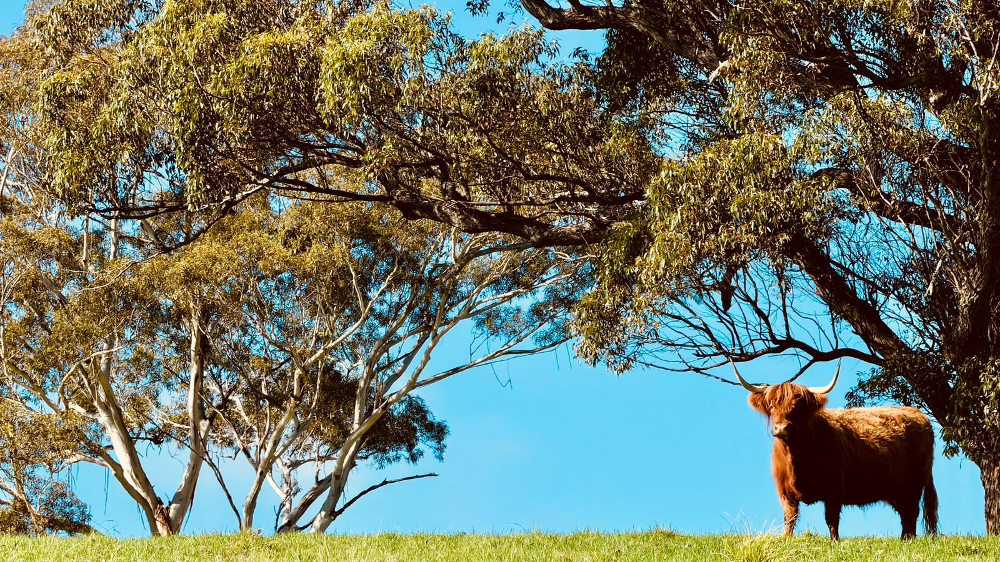
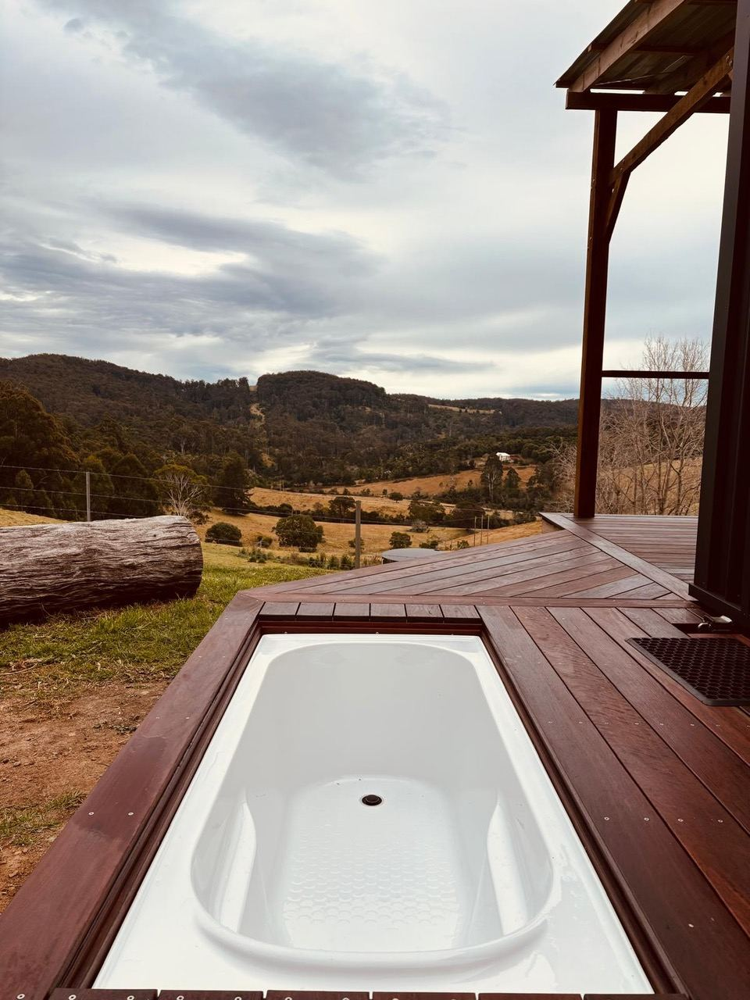
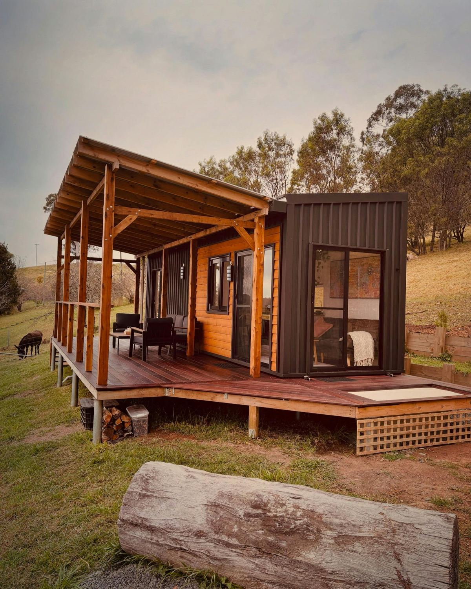
A tiny house amongst the Highlands.
For two adults, on a 90-acre cattle farm at Nethercote on the Far South Coast of NSW.
The bath is set into the deck.
It faces down the valley, with the fire pit close by.
Then the stars come out.
Having a bath under the stars with the fire right next to you was incredible.Melissa Jane, Airbnb review
Inside the tiny house
One room for living, a queen bedroom and a bathroom, separate from the homestead. Josh built much of it himself.
- SleepsTwo adults. One queen bed.
- KitchenFull kitchen and a living area with a sofa.
- OutsideWraparound deck, the outdoor bath, a fire pit and a barbecue.
- ComfortsReverse-cycle air conditioning, a washing machine, a composting toilet.
- Switched offNo wifi and no TV. Phone signal is patchy unless you're on Telstra.
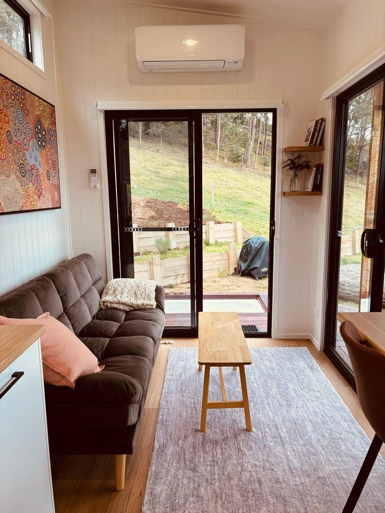
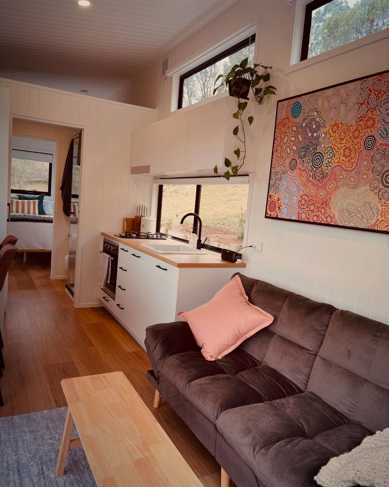
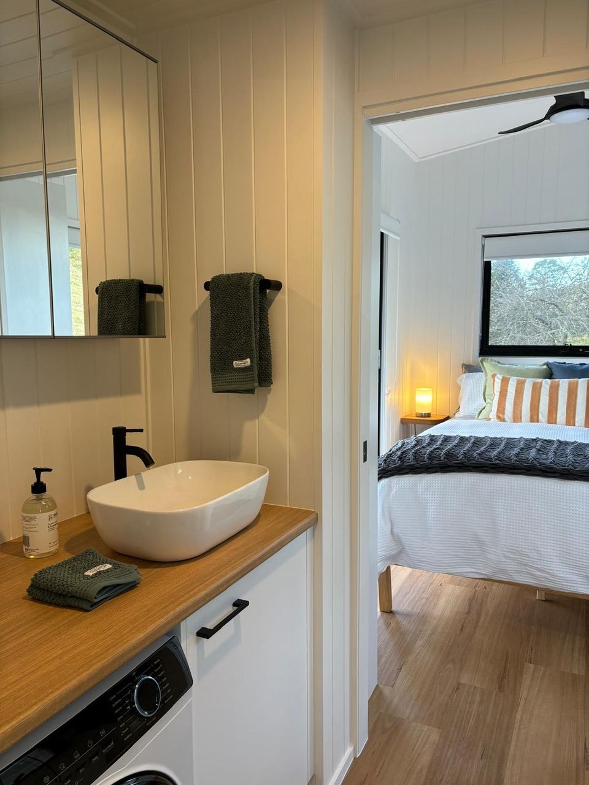
Meet the fold
Edenvale breeds registered Scottish Highland cattle. The calves are handled, brushed and hand-fed from young, and depending on where the herd is grazing, some are friendly with guests.
- Jamiethe matriarch
- Charlottethe gentle leader
- Delilahthe affection seeker
- Lucythe easy going one
- Rubythe social butterfly
- Margotloves being brushed
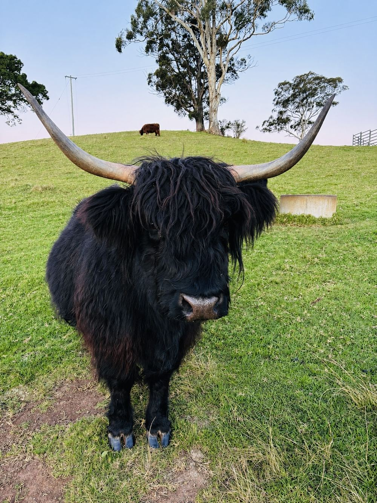
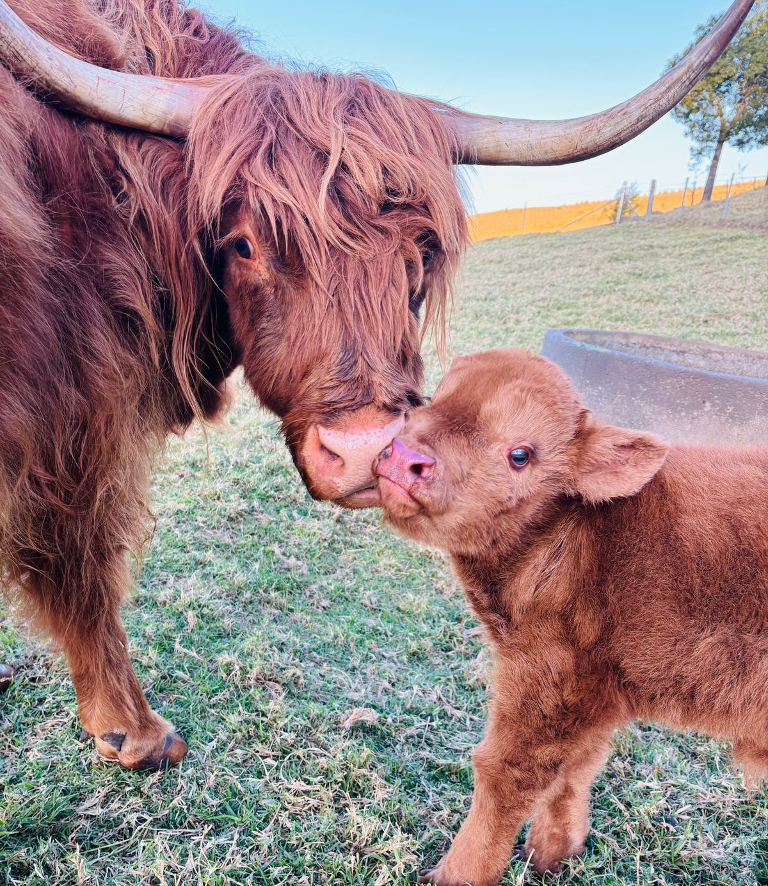
Also on the farm: goats, donkeys, chooks and guinea fowl, with kangaroos and wombats in the paddocks.
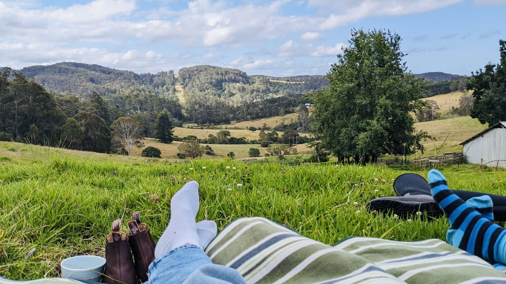
Ninety acres to wander
Rolling pasture and native bush, bordered by national park. The farm has its own waterfall, a weir and walking trails, and mountain bike trails are close by.
Robyn and Josh
Robyn grew up on her father's cattle station north of Marble Bar in the Pilbara. At 21 a trip to Scotland introduced her to Highland cattle, and she bought her first three, two heifers and a bull, about three weeks before the farm was hers.
Josh grew up in rural England. He built the stables and much of the tiny house, and does the fixing and building a farm keeps asking for.
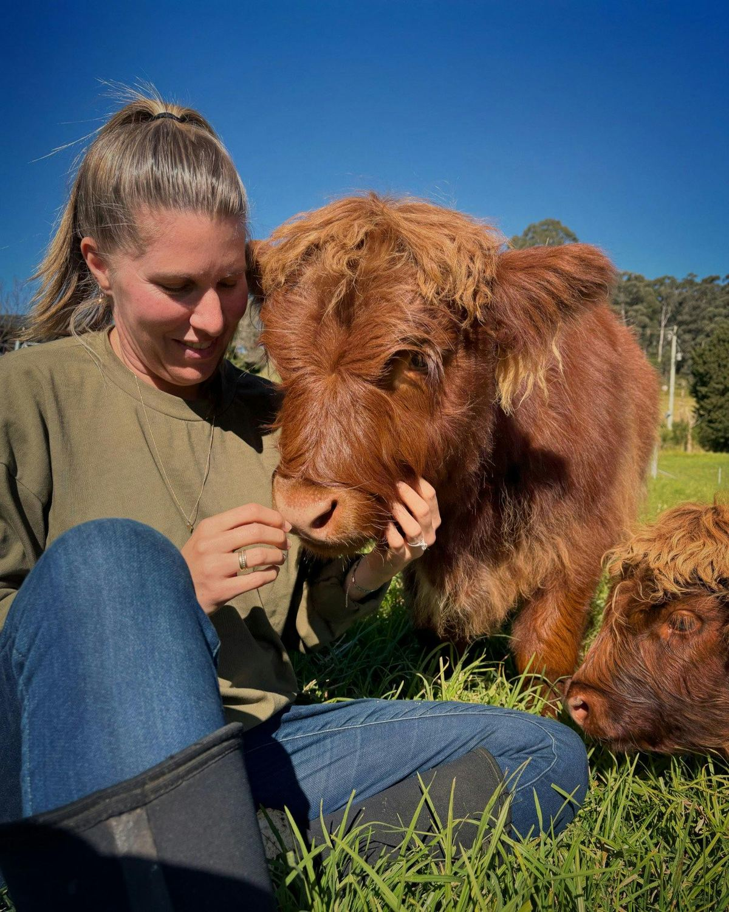
What guests say
5.0 from 61 reviews on Airbnb, where it's a Guest favourite.
"The farm animals were a highlight, including Jock the donkey."
Jesse, Airbnb, July 2026"The house is private and you can explore the property and the national park around it."
Max, Airbnb, February 2026The bed "can only be described as 'anti-gravitational'."
Martin, Airbnb, January 2026"Having a bath under the stars with the fire right next to you was incredible."
Melissa Jane, Airbnb, April 2026
Getting here
270 Ballantyne Road, Nethercote NSW 2549. Guests say Eden and Merimbula are a short drive away.
- The driveway is unsealed. You don't need a 4WD.
- The farm sits on rolling hills, so there are slopes everywhere. It isn't suited to anyone unsteady on their feet.
- Adults only.
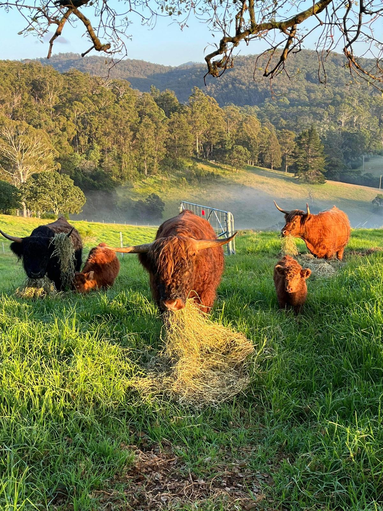
Check dates
The tiny house is for two adults.
Or ask Robyn
Tell her your dates, and anything you'd like to know about the farm.
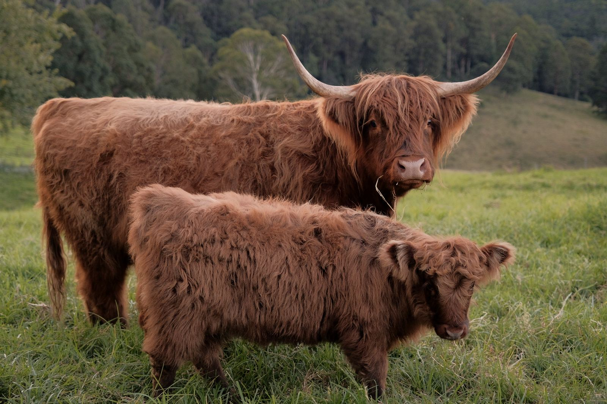
Turn in at 270 Ballantyne Road.
Nethercote, Far South Coast NSW. A tiny house for two, and the Highlands next door.